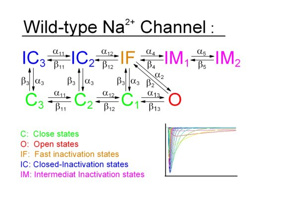
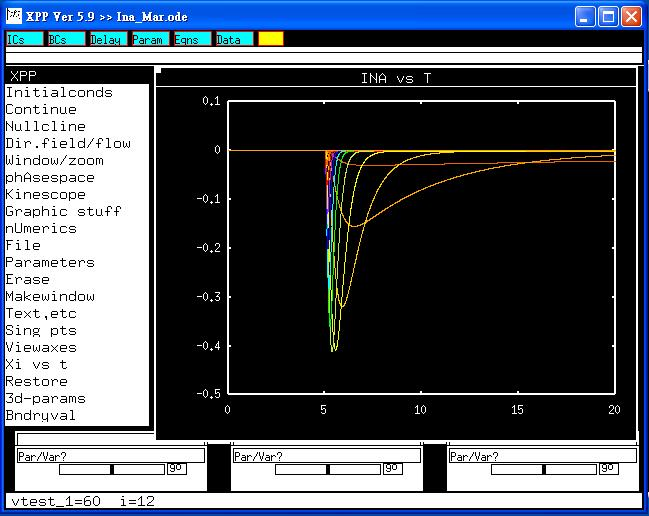

This is a readme file for the models associated with the paper:
Clancy CE and Rudy Y. Na(+) channel mutation that causes both Brugada
and long-QT syndrome phenotypes: a simulation study of
mechanism. Circulation 2002;105:1208-13.
Abstract: BACKGROUND: Complex physiological interactions determine the
functional consequences of gene abnormalities and make mechanistic
interpretation of phenotypes extremely difficult. A recent example is
a single mutation in the C terminus of the cardiac Na(+) channel,
1795insD. The mutation causes two distinct clinical syndromes, long QT
(LQT) and Brugada, leading to life-threatening cardiac
arrhythmias. Coexistence of these syndromes is seemingly paradoxical;
LQT is associated with enhanced Na(+) channel function, and Brugada
with reduced function. METHODS AND RESULTS: Using a computational
approach, we demonstrate that the 1795insD mutation exerts variable
effects depending on the myocardial substrate. We develop Markov
models of the wild-type and 1795insD cardiac Na(+) channels. By
incorporating the models into a virtual transgenic cell, we elucidate
the mechanism by which 1795insD differentially disrupts cellular
electrical behavior in epicardial and midmyocardial cell types. We
provide a cellular mechanistic basis for the ECG abnormalities
observed in patients carrying the 1795insD gene mutation.
CONCLUSIONS: We demonstrate that the 1795insD mutation can cause both
LQT and Brugada syndromes through interaction with the heterogeneous
myocardium in a rate-dependent manner. The results highlight the
complexity and multiplicity of genotype-phenotype relationships, and
the usefulness of computational approaches in establishing a
mechanistic link between genetic defects and functional abnormalities.
-------------------------------------------------------------------------------
The state diagram for this Markovian model (model.jpg):

was shown in figure 1A of the paper. Model parameters are available
in the Appendix file at:
http://circ.ahajournals.org/cgi/content/full/105/10/1208/DC1
Parts of the results were shown in figure 3B of the paper.
Current-voltage relation of this current can also be constructed.
-------------------------------------------------------------------------------
To run the models:
XPP: start with the command
xpp Ina_Mar.ode
Mouse click on "Initialconds", and then "(G)o".
Regarding xpp program, please contact with Bard Ermentrout's website:
http://www.pitt.edu/~phase/
Here describes the details in how to get and use xpp.
To run a series of voltage-clamp studies shown in result.jpg, click
"Range over", change to 'vtest_1', and then select voltage protocol
from Steps (12), Start (-60) and End (+60). and press (G)o, This
makes traces

similar to fig 3A of the paper by Makita et al (2002).
Makita N et al. Drug-induced long-QT syndrome associated with a
subclinical SCN5A mutation. Circulation 2002;106:1269-74.
The model files were submitted by:
Jiun-Shian Wu, Sheng-Nan Wu, Ruey J. Sung, Han-Dong Chang
National Cheng Kung University Medical College
Tainan 70101, Taiwan
e-mail: snwu@mail.ncku.edu.tw